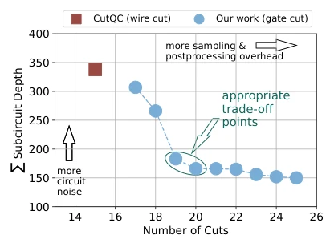
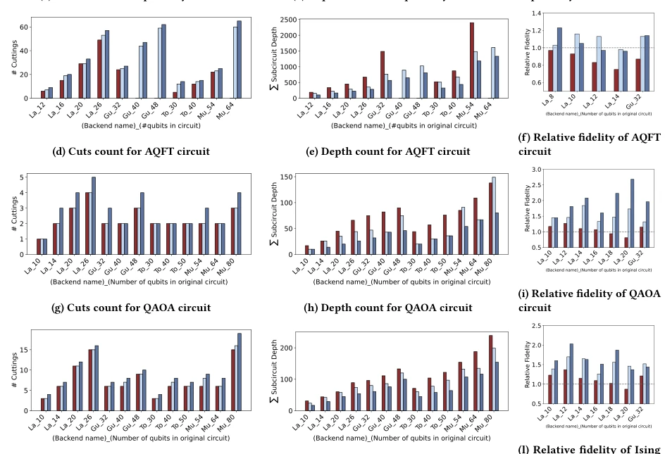
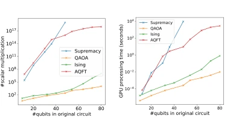
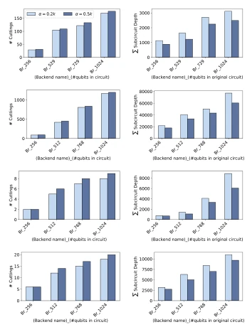
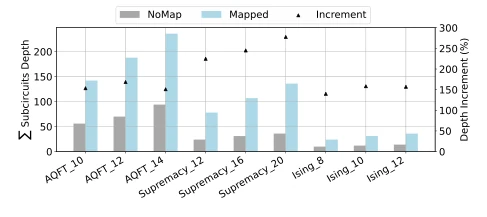
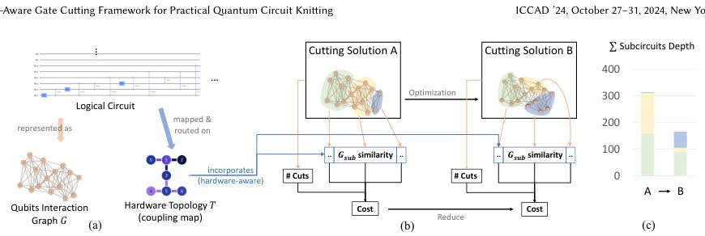
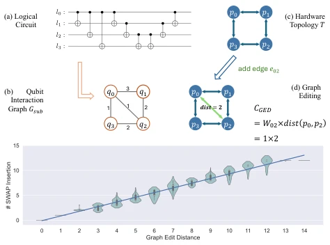

This paper delivers a 'hardware-aware' wake-up call to the quantum community. In the NISQ era, quantum circuit knitting (Circuit Knitting) is a hot topic, but previous work (such as CutQC) focused solely on minimizing cuts, forgetting that the resulting subcircuits must run on real chips. This is akin to cutting a cake considering only the number of pieces while ignoring the plate size, resulting in pieces that do not fit at all and must be forced in, causing fidelity to plummet. The author team was pragmatic, directly introducing hardware topology information and using Graph Edit Distance (GED) to predict SWAP overhead. Although this approach is considered a 'well-established' optimization strategy in the quantum field, it is indeed effective when applied to the circuit cutting phase. However, this approach also imposes high requirements on classical post-processing, and currently only runs on a few small IBM chips, still far from large-scale practical application. Overall, it is a pragmatic improvement, but do not expect it to solve all noise problems of quantum hardware, after all qubits are still too fragile, and any additional SWAP is a consumption of coherence time.
The core pain point lies in existing circuit knitting technologies being too idealized. Quantum circuit knitting aims to solve the problem of insufficient physical qubits by cutting large circuits, but existing research mainly focuses on reducing the number of cuts to lower sampling overhead (Sampling Overhead) [33]. However, this strategy ignores hardware information. As shown in Figure 2, directly compiling segmented subcircuits leads to a large number of SWAP insertions, significantly increasing circuit depth, thereby reducing fidelity. Frameworks such as CutQC [33] and ScaleQC [32] optimize the number of cuts, but are often powerless in the qubit routing phase. This leads to the final result being very sensitive to mapping and routing overhead. Furthermore, sampling overhead has an exponential relationship with the number of cuts, while routing overhead is strongly correlated with hardware layout. Therefore, hardware layout needs to be considered at the cutting stage, balancing the number of cuts and routing overhead, otherwise subsequent compilation will offset the benefits brought by cutting, leading to actual running effects not meeting expectations.

Figure 5: Balancing between different overheads in circuit knitting. In this motivation experiment, we cut and compile a AQFT_16 circuit to the IBM Lagos (7-qubit) quantum hard- ware. Y-axis shows the sum of subcircuit depth, representing the routing overhead; while X-axis shows the number of cuts related to sampling & postprocessing overhead.

Figure 9: Evaluation. Row 1,2,3,4 are result for Supremacy, AQFT, QAOA, Ising benchmark respectively. Column 1 is the number of cuts, column 2 is sum of depth of subcircuits, column 3 is the relative fidelity. In the X-axis, La_n, Gu_n, To_n, Mu_n stand for IBM chip Lagos, Guadalupe, Tokyo, Mumbai running n-qubit size original circuit. It is notably that three groups of data of CutQC is blank for the AQFT benchmark, because solution is not feasible.
The overall process includes three stages: circuit cutting, compilation execution, and classical post-processing. The innovation lies in moving the routing problem forward to the cutting stage. First, the circuit is modeled as a Qubit Interaction Graph, where vertices represent logical qubits and edges represent two-qubit gates. The core algorithm uses Graph Edit Distance (GED) to measure the similarity between the subcircuit interaction graph and hardware topology, thereby predicting the number of SWAP insertions. The cost function is designed as a weighted sum of the number of cuts and the sum of GED of all subcircuits (C = #Cuts + α·ΣCGED). The authors use the Random Edge Contraction algorithm to recursively search for the optimal cutting scheme, and set subgraph size constraints. Parameter α is automatically adjusted according to gate density. In addition, the classical post-processing part adopts Tensor Network Contraction to optimize Kronecker product calculations, utilizing GPU acceleration. The entire framework is implemented based on Qiskit, compatible with existing compilation flows, and supports distributed quantum computing scenarios. In this way, the algorithm can directly avoid partition schemes with high SWAP risk during cutting.

Figure 12: Overheads associated with result recombination in postprocessing. (a) illustrates the number of scalar multipli- cations to be performed in postprocessing, while (b) shows the postprocessing time on a NVIDIA V100 GPU.

Figure 10: Evaluation. Row 1,2,3,4 are result for Supremacy, AQFT, QAOA, Ising benchmark respectively. Column 1 is the number of cuts, column 2 is sum of depth of subcircuits. In the X-axis, Br_n stand for IBM chip Brisbane (127-qubit) running n-qubit size original circuit.
Four benchmarks were tested on IBM quantum processors (Lagos, Guadalupe, Mumbai, Brisbane): Supremacy, AQFT, QAOA, Ising. The baseline is CutQC. Metrics include number of cuts, total subcircuit depth, and relative fidelity. Results show that compared to CutQC, this framework reduced subcircuit depth by 25%-64% (average 48%) while increasing the number of cuts by only 3%-13%, and improved relative fidelity by 1.39x-2.7x. Pareto frontier solutions can still be found at the 1000 qubit scale. Classical post-processing performed well on the GPU. Notably, in the AQFT benchmark, some CutQC schemes were infeasible, while this framework ran successfully. Furthermore, the optimality of the algorithm under known optimal solutions was verified by constructing virtual hardware topology, proving it can better balance multiple overheads. Experiments also show that as circuit scale increases, the algorithm remains effective, proving its scalability.
其他图片Other Figures

Figure 2: Example of qubit routing overhead, measured by the sum of depth of each subcircuits. "NoMap" shows com- pilation results with all-to-all qubit connectivity (or before compilation), "Mapped" shows the results when subcircuits are compiled with IBM Lagos (7-qubit) as backend. "Incre- ment" shows the percentage of increased Í𝑆𝑢𝑏𝑐𝑖𝑟𝑐𝑢𝑖𝑡𝐷𝑒𝑝𝑡ℎ from "NoMap" to "Mapped", with its axis on the right.

Figure 6: Hardware-aware optimization for circuit cutting. (a) An example of the qubit interaction graph 𝐺, with AQFT_16 as the original logical circuit. (Every 𝑊𝑒𝑖𝑗has value 1 in this circuit, so we don’t draw it on 𝐺). The circuit will be cut and compiled to IBM Lagos (hardware topology 𝑇). (b) Optimizing the cutting solution with multiple objectives: #Cuts and Graph Similarity, lead to a reduction in subcircuits depth, shown in (c).

Figure 7: (a) An example of calculating the graph editing cost. (b) Distribution of the number of SWAPs (Y-axis) for different heuristic cost 𝐶(X-axis). We randomly sample 1000 subcircuits cut down from the AQFT_16 benchmark, and compile them to IBM Lagos. We can see a linear correlation in this case between edit distance and SWAPs.